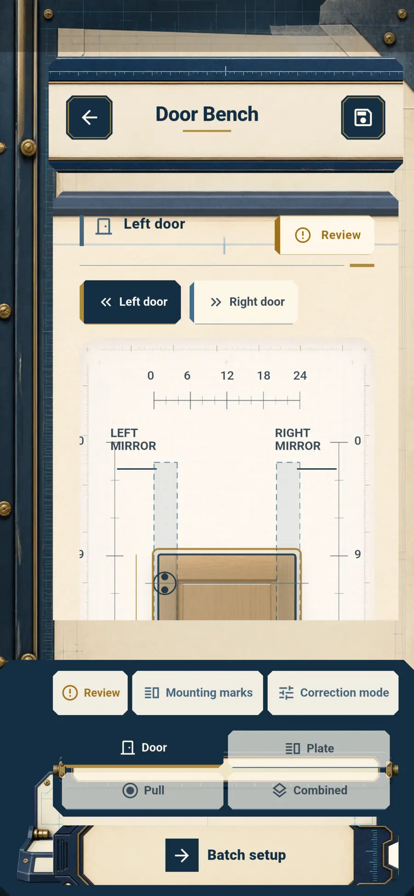
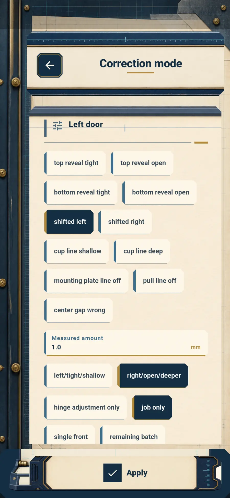

01 · Public repository
HingeBench
Offline-first workshop utility that turns cabinet measurements and hardware profiles into repeatable drilling marks, warnings, and grouped setup steps.
- Domain logicDeterministic geometry isolated from UI and covered by unit tests.
- Data integritySaved jobs keep snapshots even when library records change.
- State designGetX for a compact, closely connected local workflow.
FlutterGetXGetStorageUnit testsGitHub Actions
Inspect source and tests↗


✓
Behavior testedgeometry · warnings · persistence